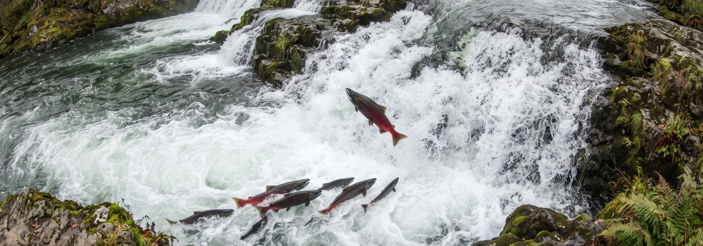

How it flags
Each connection group is scored two ways: an absolute score from its total bytes alone (total_bytes / (total_bytes + 100000000)), and a relative normalized score computed within the input file. A group is flagged when its absolute score exceeds the threshold (default 0.8), or when its relative score exceeds the threshold and its total bytes reach the minimum bytes value (default 1000000, set with --min-bytes). Usage, as the README gives it: ./analyze-reverse-shell-detector [params]. Its one requirement is pandas>=2.1.0.

Parameters
| Parameter | What the README says |
|---|---|
-h | Show help message and exit |
-i | Path to the network traffic data file (e.g., CSV, PCAP converted to CSV). |
-o | Path to save the analysis report. Defaults to reverse_shell_report.txt |
-t | Threshold for flagging suspicious connections. Defaults to 0.8. |
--min-bytes | Minimum total bytes a connection group must reach before the relative score alone can flag it. Defaults to 1000000. |
-f | Format of the input file. Only 'csv' is supported. Defaults to 'csv'. |
Stated limits
The relative score alone never flags a group below the minimum bytes value, and a single large group can be flagged on its absolute score. Input format is csv only. The licence line at the close of the README is a copyright line only, with no licence named.